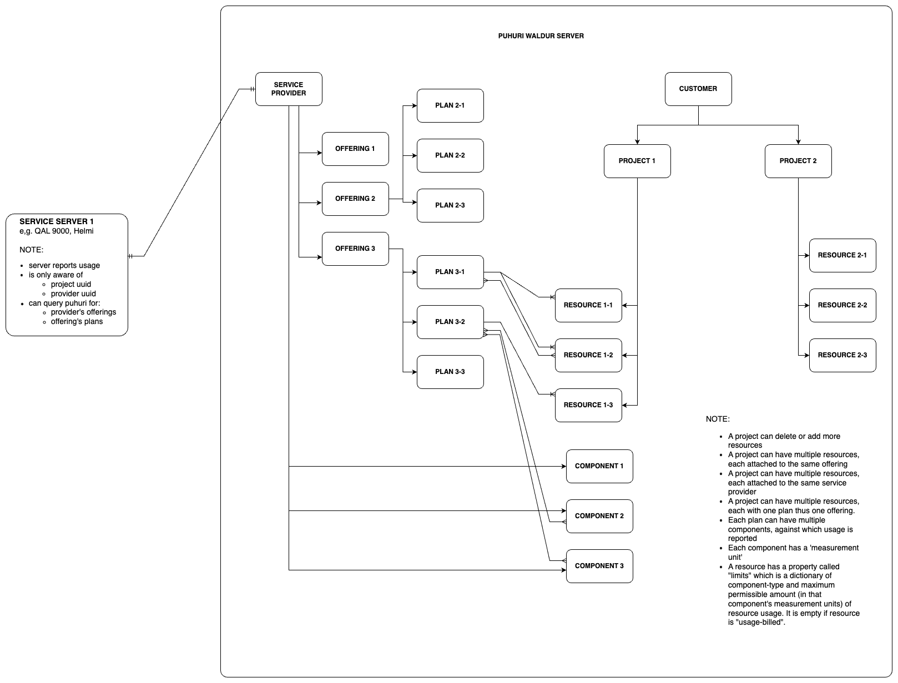
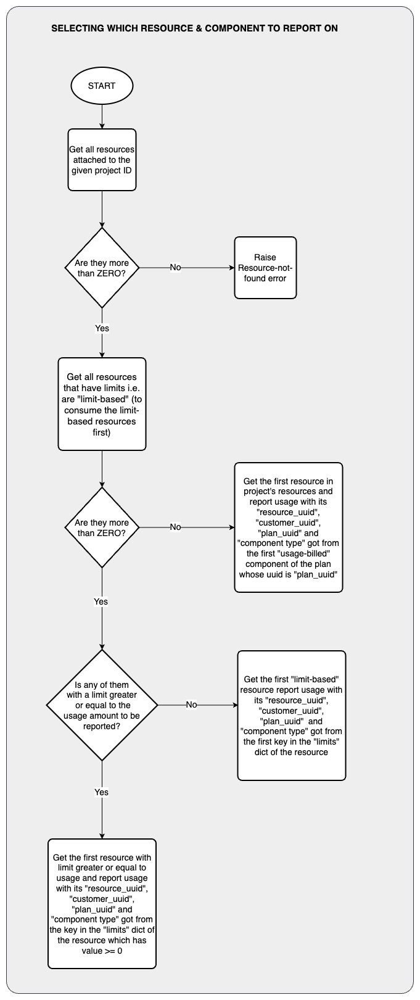

Puhuri-Tergite playground
This is just a playgorund as we try to connect Tergite to Puhuri
GLOBAL VARIABLES
The following gloabl variables should be set to the right values.
import asyncio
import enum
import pprint
import pydantic
from datetime import datetime, timezone
from typing import Any, Dict, Optional, Tuple, List
from motor import motor_asyncio
from pymongo import UpdateOne
from waldur_client import WaldurClient, ComponentUsage
# The User-set variables
WALDUR_URI = "https://access.nordiquest.net/api/"
WALDUR_TOKEN = "<API key of your user, click on the user in the navbar>"
PROVIDER_UUID = "<Unique ID of the Service provider for QAL900, visit the service provider detail page and get the uuid in the URL box>"
# this requires one to install mongodb. Or you can set it to "" or None and it will be ignored
MONGODB_URI = "mongodb://localhost:27017"
# Puhuri Waldur client
CLIENT = WaldurClient(WALDUR_URI, WALDUR_TOKEN)
DB_CLIENT: Optional[motor_asyncio.AsyncIOMotorClient] = None
if MONGODB_URI:
DB_CLIENT = motor_asyncio.AsyncIOMotorClient(MONGODB_URI)
DB_NAME = "your-database"
PROJECTS_COLLECTION = "projects"
# Exceptions
class BaseQal9000Exception(Exception):
def __init__(self, message: str = ""):
self._message = message
def __repr__(self):
return f"{self.__class__.__name__}: {self._message}"
def __str__(self):
return self._message if self._message else self.__class__.__name__
class ResourceNotFoundError(BaseQal9000Exception):
"""Raised when no resources are found"""
class ComponentNotFoundError(BaseQal9000Exception):
"""Raised when no component is found"""
class PlanPeriodNotFoundError(BaseQal9000Exception):
"""Raised when no plan period is found"""Puhuri Entity Layout

Database Schemas
There are a few database schemas we may need. We are using mongodb here, but any kind of storage can be used/
class ProjectSource(str, enum.Enum):
PUHURI = 'puhuri'
INTERNAL = 'internal'
class Project(pydantic.BaseModel):
# ...
ext_id: str # the project_uuid in this case
source: ProjectSource
user_emails: List[str] = []
qpu_seconds: int = 0
is_active: bool = True
resource_ids: List[str] = []Operations
There are some important operations we need to pull off. They include:
- Report usage on a per-project basis for projects that have Tergite offerings
- Retrieve latest approved resource allocations that have Tergite offerings from puhuri
- Retrieve latest users added to given projects that have Tergite offerings from puhuri
Project-based Usage Report Submission
The flow of logic is as shown below

Retrieving Resources of a Given Project
We should be able to retrieve all resources attached to a project by running the cell below.
Note that we need to first approve all pending orders for this provider. This ensures that all resources that we will query later have ‘plan periods’. (We should have updated our projects lists first)
Only resources with approved orders have plan periods.
Resources associated with approved orders have state “OK”. This is something we will filter for later.
# Set the UUID of the project whose resources you wish to inspect
PROJECT_UUID = ""
_resource_filter = {"provider_uuid": PROVIDER_UUID, "state": "OK"}
if PROJECT_UUID:
_resource_filter["project_uuid"] = PROJECT_UUID
# If you don't set the PROJECT_UUID, all resources that have offerings from
# your given service provider will appear here
_RESOURCES = CLIENT.filter_marketplace_resources(_resource_filter)
_RESOURCESLet us check if there are any resources and exit with an error if none are found
if len(_RESOURCES) == 0:
raise ResourceNotFoundError(f"no resource found for provider and project")Separate Limit-based From Usage-based Resources
Since Tergite keeps track of only the project uuid, and yet a project can have multiple resources, we need to determine the resource against which our usage report is to be made.
Currently, we think we should consume limit-based resources first before we move on to the usage-based resources.
Limit-based resources are those that are prepaid i.e. can only be used after a given amount of QPU minutes has been purchased.
On the other hand, usage-based resources are billed, say at the end of the month.
We therefore need to separate limit-based resources of a project from usage-based resources and only report usage on the usage-based resources if there is no limit-based resource.
Question: What should we do if all limit-based resources are depleted yet there are some usage-based resources? (Probably report on the usage-based resources)
_USAGE_BASED_RESOURCES = []
_LIMIT_BASED_RESOURCES = []
for resource in _RESOURCES:
# usage-based resources have an empty {} as their limits
if len(resource["limits"]) == 0:
_USAGE_BASED_RESOURCES.append(resource)
else:
_LIMIT_BASED_RESOURCES.append(resource)
print("USAGE BASED RESOURCES")
pprint.pprint(_USAGE_BASED_RESOURCES)
print("LIMIT BASED RESOURCES")
pprint.pprint(_LIMIT_BASED_RESOURCES)Selecting the Right Resource to Report Usage Against
We are going to look through the different resources and select the right resource to report usage against.
# the QPU seconds to be reported against the selected resource
_QPU_SECONDS_USED = 80
# the resource whose usage is to be updated
_SELECTED_RESOURCE: Optional[Dict[str, Any]] = None
# the accounting component to use when send resource usage.
# Note: project -> many resources -> each with an (accounting) plan -> each with multiple (accounting) components
_SELECTED_COMPONENT: Optional[Dict[str, Any]] = None
# the limit-based resources have a dictionary of "limits" with keys as the "internal names" or "types" of the components
# and the values as the maximum amount for that component. This amount is in units of that component
# e.g. 10 for one component, might mean 10 days, while for another it might mean 10 minutes depending
# on the 'measurement_unit' of that component.
# We will select the component whose limit (in seconds) >= the usage
_SELECTED_COMPONENT_TYPE: Optional[str] = NoneNOTE: We are making a big assumption that when creating components in the puhuri UI, the ‘measurement unit’s set on the component are of the following possible values: ’second’, ‘hour’, ‘minute’, ‘day’, ‘week’, ‘half_month’, and ‘month’.
We attempt to get the first limit-based resource that has a limit value (in seconds) greater or equal to the _QPU_SECONDS_USED to be reported. This is only polite to the customer so that we don’t run one resource to below zero while the others are one way above zero.
def get_accounting_component(
offering_uuid: str,
component_type: str,
cache: Optional[Dict[Tuple[str, str], Dict[str, Any]]] = None,
) -> Dict[str, Any]:
"""Gets the accounting component given the component type and the offering_uuid
If the caches are provided, it attempts to extract the component
from the cache if the cache is provided
Args:
offering_uuid: the UUID string of the offering the component belongs to
component_type: the type of the component
cache: the dictionary cache that holds components,
accessible by (offering_uuid, component_type) tuple
Returns:
the component
"""
_cache = cache if isinstance(cache, dict) else {}
component = _cache.get((offering_uuid, component_type))
if component is None:
offering = CLIENT.get_marketplace_provider_offering(offering_uuid)
_cache.update({(offering_uuid, v["type"]): v for v in offering["components"]})
component = _cache[(offering_uuid, component_type)]
return component
# A map to help convert limits and amounts to-and-fro seconds given a particular accounting component
_COMPONENT_UNIT_SECONDS_MAP: Dict[str, int] = {
"month": 30 * 24 * 3_600,
"half_month": 15 * 24 * 3_600,
"week": 7 * 24 * 3_600,
"day": 24 * 3_600,
"hour": 3_600,
"minute": 60,
"second": 1,
}
_COMPONENTS_CACHE: Dict[Tuple[str, str], Dict[str, Any]] = {}
for resource in _LIMIT_BASED_RESOURCES:
offering_uuid = resource["offering_uuid"]
for comp_type, comp_amount in resource["limits"].items():
component = get_accounting_component(
offering_uuid=offering_uuid, component_type=comp_type, cache=_COMPONENTS_CACHE)
unit_value = _COMPONENT_UNIT_SECONDS_MAP[component["measured_unit"]]
limit_in_seconds = comp_amount * unit_value
# select resource which has at least one limit (or purchased QPU seconds)
# greater or equal to the seconds to be reported.
if limit_in_seconds >= _QPU_SECONDS_USED:
_SELECTED_RESOURCE = resource
_SELECTED_COMPONENT = component
_SELECTED_COMPONENT_TYPE = comp_type
break
# get out of loop once we have a selected resource
if _SELECTED_RESOURCE is not None:
break
print("_SELECTED_RESOURCE")
pprint.pprint(_SELECTED_RESOURCE)
print("_SELECTED_COMPONENT_TYPE")
pprint.pprint(_SELECTED_COMPONENT_TYPE)
print("_SELECTED_COMPONENT")
pprint.pprint(_SELECTED_COMPONENT)If no limit-based resource has enough QPU minutes, we select the first usage-based resource. If no usage-based resource exists, we select the first limit-based resource.
Of course if there are no resources at all, we should have not reached this far! We should have exited, with an error already.
if _SELECTED_RESOURCE is None:
try:
_SELECTED_RESOURCE = _USAGE_BASED_RESOURCES[0]
except IndexError:
_SELECTED_RESOURCE = _LIMIT_BASED_RESOURCES[0]
_SELECTED_RESOURCEGetting the Right Component Type
We need to get the corresponding accounting component type to use to report usage. If we got a limit-based resource, we should have already set the _SELECTED_COMPONENT_TYPE basing on the key in the limits dict that had an amount greater or equal to the QPU minutes we are going to report.
Remember that limits is a dict containing the component types and their corresponding limits
If _SELECTED_COMPONENT_TYPE is not yet set, we need to obtain the first component type in the offering associated with the selected resource.
Let us first get the offering that is associcated with the selected resource
# This should not be necessary if you already have _SELECTED_COMPONENT_TYPE set
if _SELECTED_COMPONENT_TYPE is None:
_SELECTED_OFFERING = CLIENT.get_marketplace_provider_offering(_SELECTED_RESOURCE["offering_uuid"])
_SELECTED_OFFERINGIf offering has no components, we raise an exception and exit
# This should not be necessary if you already have _SELECTED_COMPONENT_TYPE set
if _SELECTED_COMPONENT_TYPE is None:
_components = _SELECTED_OFFERING["components"]
if len(_components) == 0:
raise ComponentNotFoundError("no components found for the selected offering")
_SELECTED_COMPONENT = _components[0]
_SELECTED_COMPONENT_TYPE = _SELECTED_COMPONENT["type"]Generate a Usage Report
We now need to generate the usage report to send over to puhuri
Let us create a function to convert the QPU seconds into the component unit e.g “hour”, “month” e.t.c
def to_measured_unit(qpu_seconds: float, measured_unit: str) -> float:
"""Converts the qpu seconds into the given measured unit of the component
measured_unit e.g. hour, day etc
Args:
qpu_seconds: the QPU seconds to convert
measured_unit: the 'measured_unit' of the accounting component
Returns:
the QPU time in 'measured_unit's
"""
# round up to two decimal places
return round(qpu_seconds / _COMPONENT_UNIT_SECONDS_MAP[measured_unit], 2)And then the usage report.
Get the Plan Period for the Selected Resource
In order to send the usage report, one must sent the plan preiod UUID for the given resource. Note that only resources whose orders have been approved (or ar in state ‘OK’), have associated planned periods.
Let’s retrieve the plan periods for the selected resource
_PLAN_PERIODS = CLIENT.marketplace_resource_get_plan_periods(resource_uuid=_SELECTED_RESOURCE["uuid"])
_PLAN_PERIODSWe now need to get the plan period for the current month. We may not be sure whether there is only one plan period for this month or not so we will get the last one in the list for this month.
Let’s first create some datetime utility functions
def to_datetime(timestamp: str) -> datetime:
"""converts a timestamp of format like 2024-01-10T14:32:05.880079Z to datetime
Args:
timestamp: the timestamp string
Returns:
the datetime corresponding to the given timestamp string
"""
return datetime.fromisoformat(timestamp.replace("Z", "+00:00"))
def is_in_month(
month_year: Tuple[int, int],
timestamp: str,
) -> bool:
"""Checks if the given timestamp is in the given month
Note that months start at 1 i.e. January = 1, February = 2, ...
Args:
month_year: the (month, year) pair
timestamp: the timestamp string in format like 2024-01-10T14:32:05.880079Z
Returns:
True if the timestamp belongs to the same month, False if otherwise
"""
timestamp_date = to_datetime(timestamp)
month, year = month_year
return timestamp_date.month == month and timestamp_date.year == yearNow let’s get the plan periods for the current month
_NOW = datetime.now(tz=timezone.utc)
_SELECTED_PLAN_PERIOD: Optional[Dict[str, Any]] = None
_PLAN_PERIODS_FOR_CURRENT_MONTH = [
v for v in _PLAN_PERIODS
if is_in_month((_NOW.month, _NOW.year), v["start"])
]
try:
_SELECTED_PLAN_PERIOD = _PLAN_PERIODS_FOR_CURRENT_MONTH[-1]
except IndexError:
raise PlanPeriodNotFoundError(f"no plan period was found for month: {(_NOW.month, _NOW.year)}, for resource {_SELECTED_RESOURCE['uuid']}")
_SELECTED_PLAN_PERIODSubmit the Usage Report
We are now ready to submit the usage report.
We will create a component usage for the first plan period of that given resource.
# requests.post(_USAGE_REPORT_URL, data=_USAGE_REPORT_PAYLOAD, headers=_USAGE_REPORT_HEADERS)
usage = ComponentUsage(
type= _SELECTED_COMPONENT_TYPE,
amount=to_measured_unit(
800, measured_unit=_SELECTED_COMPONENT["measured_unit"]),
description= f"{_QPU_SECONDS_USED} QPU seconds",
)
CLIENT.create_component_usages(plan_period_uuid=_SELECTED_PLAN_PERIOD["uuid"],
usages=[usage])Puhuri Waldur Constraint: 1 Usage Per Month
When we try again to submit another usage for the same plan, we may see that no new usage item is added to the ‘components’ of the plan period. To see this, you will have to run the previous code cell, the run the code cell before that.
As of now it seems like Puhuri can only accept 1 usage per month. This might change in future but for now, we must accumulate usages internally, and send the accumulated data
This means that only one request is expected per day. Any requests sent within that month (say 2024-01) will overwrite the previous entry for that month.
How to Work With Constraint
We will have to log every usage internally every month as a separate usage. We expect only one usage report for each job ID. Now and again, at whatever interval we wish, we will compute the accumulated usage for the current month and project and send it over to the Puhuri waldur server.
We do not have to wait for a month to elapse in order to resend usage reports for the same resource, (or plan) since it will be overwritten.
For us to limit access to users who have gone beyond the current limit for a given project, we might need to get the current pending QPUs left basing on the accumulated usage we have internally in Tergite, vs the allocated QPU seconds.
Getting List of New Projects
We also need to get all new projects that have been created that are requesting for a resource governed by this service provider.
Get All New Resources
We first get all the new resources attached to this provider uuid
_NEW_RESOURCES = CLIENT.filter_marketplace_resources({
"provider_uuid": PROVIDER_UUID,
"state": "Creating"
})
_NEW_RESOURCESFrom these resources, we can extract the unique individual project UUID’s that are attached to these resources, and upsert them into our databases as new Project instances
First of all we need to group the resources by project UUID.
Note that a given pre-existing project can order new resources. When updating the database, we should upsert in such a way that we increment the prexisting qpu_seconds for any project that exists or we create a new project.
Let’s group the new resources by project UUID. We will sum their “limit”s and “limit_usage”
class PuhuriProjectMetadata(pydantic.BaseModel):
"""Metadata as extracted from Puhuri resources"""
uuid: str
# dict of offering_uuid and limits dict
limits: Dict[str, Dict[str, float]] = {}
# dict of offering_uuid and limit_usage dict
limit_usage: Dict[str, Dict[str, float]] = {}
resource_uuids: List[str]
def remove_nones(data: Dict[str, Optional[Any]], __new: Any):
"""Replaces None values with the replacement
Args:
data: the dictionary whose None values are to be replaced
__new: the replacement for the None values
Returns:
the dictionary with the None values replaced with the replacement
"""
return {k: v if v is not None else __new for k, v in data.items()}
def extract_project_metadata(resources: List[Dict[str, Any]]) -> List[PuhuriProjectMetadata]:
"""Extracts the project metadata from a list of resources
A project can contan any number of resources so we need to group the resources
by project UUID and aggregate any relevant fields like "limits" and "limit_usage"
Args:
resources: the list of resource dictionaries
Returns:
list of PuhuriProjectMetadata
"""
results: Dict[str, PuhuriProjectMetadata] = {}
for resource in resources:
offering_uuid = resource["offering_uuid"]
project_uuid = resource["project_uuid"]
limits = remove_nones(resource["limits"], 0)
limit_usage = remove_nones(resource["limit_usage"], 0)
project_meta = PuhuriProjectMetadata(
uuid=project_uuid,
limits={offering_uuid: limits},
limit_usage={offering_uuid: limit_usage},
resource_uuids=[resource["uuid"]],
)
original_meta = results.get(project_uuid, None)
if isinstance(original_meta, PuhuriProjectMetadata):
original_limits = original_meta.limits.get(offering_uuid, {})
project_meta.limits[offering_uuid] = {
k: v + original_limits.get(k, 0)
for k, v in limits.items()
}
original_usages = original_meta.limit_usage.get(offering_uuid, {})
project_meta.limit_usage[offering_uuid] = {
k: v + original_usages.get(k, 0)
for k, v in limit_usage.items()
}
project_meta.resource_uuids.extend(original_meta.resource_uuids)
results[project_uuid] = project_meta
return list(results.values())
_NEW_PROJECT_METADATA = extract_project_metadata(_NEW_RESOURCES)
_NEW_PROJECT_METADATACompute the QPU seconds for each project
Before we can update our database, we need to compute the QPU seconds for each project.
Let’s create a function to do just that
def get_qpu_seconds(metadata: PuhuriProjectMetadata) -> float:
"""Computes the net QPU seconds the project is left with
Args:
metadata: the metadata of the project
Returns:
the net QPU seconds, i.e. allocated minus used
"""
net_qpu_seconds = 0
_components_cache: Dict[Tuple[str, str], Dict[str, Any]] = {}
for offering_uuid, limits in metadata.limits.items():
limit_usage = metadata.limit_usage.get(offering_uuid, {})
for comp_type, comp_amount in limits.items():
component = get_accounting_component(
offering_uuid=offering_uuid, component_type=comp_type, cache=_components_cache)
unit_value = _COMPONENT_UNIT_SECONDS_MAP[component["measured_unit"]]
net_comp_amount = comp_amount - limit_usage.get(comp_type, 0)
net_qpu_seconds += (net_comp_amount * unit_value)
return net_qpu_secondsWe can now extract Project instances from the PuhuriProjectMetadata
_NEW_PROJECTS: List[Project] = [Project(
ext_id=item.uuid,
source=ProjectSource.PUHURI,
qpu_seconds=get_qpu_seconds(item),
is_active=False,
resource_ids=item.resource_uuids,
) for item in _NEW_PROJECT_METADATA]
_NEW_PROJECTSUpsert the New Projects into Database
We now have to upsert the new projects into the database.
Remember, if any of the projects already exist, we should increment their QPU seconds; and their is_active set to False momentarily.
Notice that we have not yet approved the above orders. However, all these new projects are set to is_active=False, until their orders are approved. This is after they are inserted into the database.
First, let us create a unique Index for the project ext_id in the projects database collection. This is to ensure that no project has more than one entry.
SideNote: beanie ODM can be a good tool to use to create database models that have indexes
# if using mongo db
if DB_CLIENT:
_db: motor_asyncio.AsyncIOMotorDatabase = DB_CLIENT[DB_NAME]
_collection: motor_asyncio.AsyncIOMotorCollection = _db[PROJECTS_COLLECTION]
await _collection.create_index("ext_id", unique=True)Then we will update our projects
# if using mongo db
if DB_CLIENT:
_db: motor_asyncio.AsyncIOMotorDatabase = DB_CLIENT[DB_NAME]
_collection: motor_asyncio.AsyncIOMotorCollection = _db[PROJECTS_COLLECTION]
_responses = await asyncio.gather(*(_collection.update_one({
"ext_id": project.ext_id,
# a guard to ensure projects whose order approvals keep
# failing do not have their qpu_seconds incremented indefinitely
# NOTE: this may fail with a Conflict Error if any of the resource_ids
# already exists in the project. You might need to resolve this manually
"resource_ids": {"$nin": project.resource_ids},
}, {
"$set": {
"source": ProjectSource.PUHURI.value,
"is_active": project.is_active,
},
"$inc": {
"qpu_seconds": project.qpu_seconds,
},
"$addToSet": {"resource_ids": {"$each": project.resource_ids}}
}, upsert=True) for project in _NEW_PROJECTS), return_exceptions=True)
_UPDATED_PROJECTS = [
_NEW_PROJECTS[index]
for index, resp in enumerate(_responses)
if not isinstance(resp, Exception)
]
pprint.pprint(_UPDATED_PROJECTS)Approve All Orders for the given resources
We will then approve all the orders for the new resources and when successful, we will activate their associated projects
We will first create a function to do the approvals
async def approve_pending_orders(client: WaldurClient, provider_uuid: str, **kwargs) -> Dict[str, Any]:
"""Approves all orders for the given service provider that are in the 'pending-provider' state
Args:
client: the WaldurClient
provider_uuid: the UUID string of the service provider
kwargs: extra filters for filtering the orders
Returns:
dictionary of kwargs used to filter orders.
Raises:
WaldurClientException: error making request
ValueError: no order item found for filter {kwargs}
"""
# This function does not have to be asynchronous in this notebook
# but it needs to be asynchronous in web-servers so that it does not
# block other requests. Same thing for all other functions that make
# network calls.
loop = asyncio.get_event_loop()
filter_obj = {
'state': 'pending-provider',
'provider_uuid': provider_uuid,
**kwargs
}
order_items = await loop.run_in_executor(None, client.list_orders, filter_obj)
if len(order_items) == 0:
raise ValueError(f"no order item found for filter {kwargs}")
await asyncio.gather(*(loop.run_in_executor(None, client.marketplace_order_approve_by_provider, order["uuid"])
for order in order_items),)
return kwargsThen we can make the API calls to Puhuri top approve the pending orders
# if using mongo db
if DB_CLIENT:
_RESOURCE_UUID_PROJECT_UUID_MAP = {
resource_uuid: project.ext_id
for project in _UPDATED_PROJECTS
for resource_uuid in project.resource_ids
}
pprint.pprint(_RESOURCE_UUID_PROJECT_UUID_MAP)
# _results is a list of Dict[resource_uuid, str]
# Note that we are filtering by resource UUID, not project UUID, because there is a chance
# that a project could have added new resources while we were still processing the
# current ones
_responses = await asyncio.gather(*(
approve_pending_orders(CLIENT, PROVIDER_UUID, resource_uuid=resource_uuid)
for resource_uuid in _RESOURCE_UUID_PROJECT_UUID_MAP.keys()
), return_exceptions=True)
_APPROVED_RESOURCE_UUID_MAPS = [resp for resp in _responses if isinstance(resp, dict)]
pprint.pprint(_APPROVED_RESOURCE_UUID_MAPS)We then have to get all approved projects i.e. projects without a non-approved order
# if using mongo db
if DB_CLIENT:
_results_map = {item["resource_uuid"]: True for item in _APPROVED_RESOURCE_UUID_MAPS}
# approved projects are those that have all their resources approved
_APPROVED_PROJECT_UUIDS = [
metadata.uuid for metadata in _NEW_PROJECT_METADATA
if all(_results_map.get(resource_uuid) for resource_uuid in metadata.resource_uuids)
]
pprint.pprint(_APPROVED_PROJECT_UUIDS)Then we update the approved projects in the database by setting their is_active to True.
Note that some projects might have been active before new orders were queried. But then due to a failing order approval, they suddenly become inactive. That order must be resolved before they are reactivated, on the next run.
Otherwise, no new resources will be added to that project
# if using mongo db
if DB_CLIENT:
_db: motor_asyncio.AsyncIOMotorDatabase = DB_CLIENT[DB_NAME]
_collection: motor_asyncio.AsyncIOMotorCollection = _db[PROJECTS_COLLECTION]
# set the approved projects' "is_active" to True
_result = await _collection.bulk_write(
[UpdateOne({
"ext_id": ext_id,
}, {
"$set": {
"is_active": True,
}
})
for ext_id in _APPROVED_PROJECT_UUIDS]
)
pprint.pprint(_result)Updating QPU Seconds for Each Pre-existing Project
We need to update the allocated QPU seconds for all projects. This is like taking a snapshot of Puhuri’s state at a given time and transfering it to QAL9000.
We should first of all get all approved resources. This should ideally be done after approving all pending orders (i.e. after updating the project list in Tergite).
_APPROVED_RESOURCES = CLIENT.filter_marketplace_resources({
"provider_uuid": PROVIDER_UUID,
"state": "OK"
})
_APPROVED_RESOURCESWe are assuming that all projects allocated to QAL9000 in puhuri will be “limit-based”, as this allows us to restrict usage of the quantum computer once the limits for the allocation have been exhausted.
However, we are not able to stop any one from creating a ‘usage-based’ resource and attaching it to QAL9000. We will thus keep the qpu_seconds of such projects at 0 hence no access to their members.
In future, this could change. For instance, we could begin tracking whether a project is ‘usage-based’ or ‘limit-based’ within QAL9000. And then update the authorization logic to allow users whose projects are ‘usage-based’ even when their qpu_seconds is <= 0
Let us now add up all the net qpu_seconds for each project (since a project can have multiple resources).
We do this by grouping the resources into PuhuriProjectMetadata.
_ALL_PROJECT_METADATA = extract_project_metadata(_APPROVED_RESOURCES)
_ALL_PROJECT_METADATAThen we compute the QPU seconds of each project from the PuhuriProjectMetadata
_ALL_PROJECTS: List[Project] = [Project(
ext_id=item.uuid,
source=ProjectSource.PUHURI,
qpu_seconds=get_qpu_seconds(item),
is_active=True,
resource_ids=item.resource_uuids,
) for item in _ALL_PROJECT_METADATA]
_ALL_PROJECTSWe then update the database; replacing the QPU seconds for each project with the new one.
# if using mongo db
if DB_CLIENT:
_db: motor_asyncio.AsyncIOMotorDatabase = DB_CLIENT[DB_NAME]
_collection: motor_asyncio.AsyncIOMotorCollection = _db[PROJECTS_COLLECTION]
_responses = await asyncio.gather(*(_collection.update_one({
"ext_id": project.ext_id,
# a guard to ensure that no resource is ignored
# NOTE: this may fail with a Conflict Error if any of the resource_ids
# does not already exist in the project. You might need to resolve this manually
"resource_ids": {"$in": project.resource_ids},
},
{
"$set": {
"source": ProjectSource.PUHURI.value,
"is_active": project.is_active,
"qpu_seconds": project.qpu_seconds,
"resource_ids": project.resource_ids,
},
},
upsert=True) for project in _ALL_PROJECTS), return_exceptions=True)
_ALL_UPDATED_PROJECTS = [
_ALL_PROJECTS[index]
for index, resp in enumerate(_responses)
if not isinstance(resp, Exception)
]
pprint.pprint(_ALL_UPDATED_PROJECTS)Ensuring Idempotency
We do not upsert in this case.
Any projects whose approved resources have changed between the last time the database was updated with new resource_uuids and now, will not be updated by this routine.
It should be updated by the routine that deals with new resource allocations.
Updating List of Users Attached to Projects
We also need to be able to get all users that are all given projects recently.
Preferably, it would be better to get any new user attachments as opposed to scanning all projects every single time. However, this seems like it is not possible at this time.
Get All Approved Resources
So we need to first get all approved resources. This should ideally be done after approving all pending orders (i.e. after we have updated the project list in Tergite with the new orders).
_APPROVED_RESOURCES = CLIENT.filter_marketplace_resources({
"provider_uuid": PROVIDER_UUID,
"state": "OK"
})
_APPROVED_RESOURCESGet the Teams for Each Approved Resource
For each approved resource, we extract the teams and associate them with the project_uuid for that resource
# A map of project_uuid and the list of users attached to it
_PROJECTS_USERS_MAP = {
resource["project_uuid"]: CLIENT.marketplace_resource_get_team(resource["uuid"])
for resource in _APPROVED_RESOURCES
}
_PROJECTS_USERS_MAPWe can them update our databases with the new projects users, ensuring to overwrite any existing user lists for any project, while closing all puhuri-attached projects that we have at we have in QAL9000 that have no users anymore.
This requires that we tag every project in QAL9000 with a ‘source’ attribute so that we are able to extract those that are from Puhuri (i.e. with source=‘puhuri’).
# if using mongo db
if DB_CLIENT:
_db: motor_asyncio.AsyncIOMotorDatabase = DB_CLIENT[DB_NAME]
_collection: motor_asyncio.AsyncIOMotorCollection = _db[PROJECTS_COLLECTION]
await _collection.bulk_write(
[UpdateOne({
"ext_id": project_id,
"source": ProjectSource.PUHURI.value,
}, {
"$set": {
"user_emails": [user["email"] for user in user_list],
}
})
for project_id, user_list in _PROJECTS_USERS_MAP.items()]
)Ensuring Idempotency
We do not upsert in this case. We just replace the user_emails field with the new lists
This also requires that we bulk update all projects whose ‘external ID’ are not IN the list of keys from _PROJECTS_USERS_MAP and yet have ‘source’ = ‘puhuri’
# if using mongo db
if DB_CLIENT:
_db: motor_asyncio.AsyncIOMotorDatabase = DB_CLIENT[DB_NAME]
_collection: motor_asyncio.AsyncIOMotorCollection = _db[PROJECTS_COLLECTION]
_filter_obj = {
"source": ProjectSource.PUHURI.value,
"ext_id": {"$nin": list(_PROJECTS_USERS_MAP.keys())},
}
await _collection.update_many(filter=_filter_obj, update={
"$set": {"user_emails": []}
})